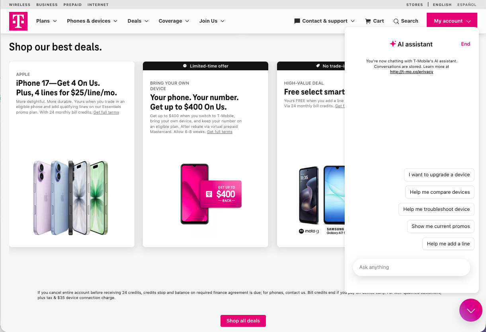
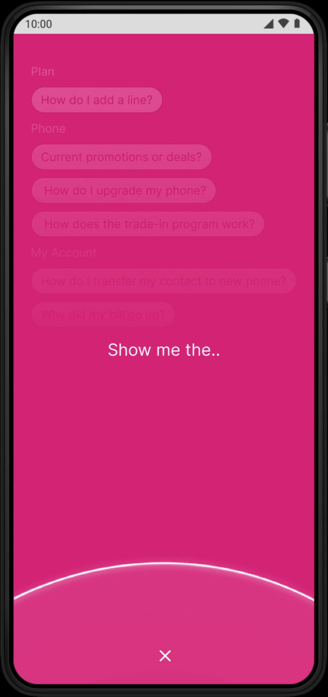
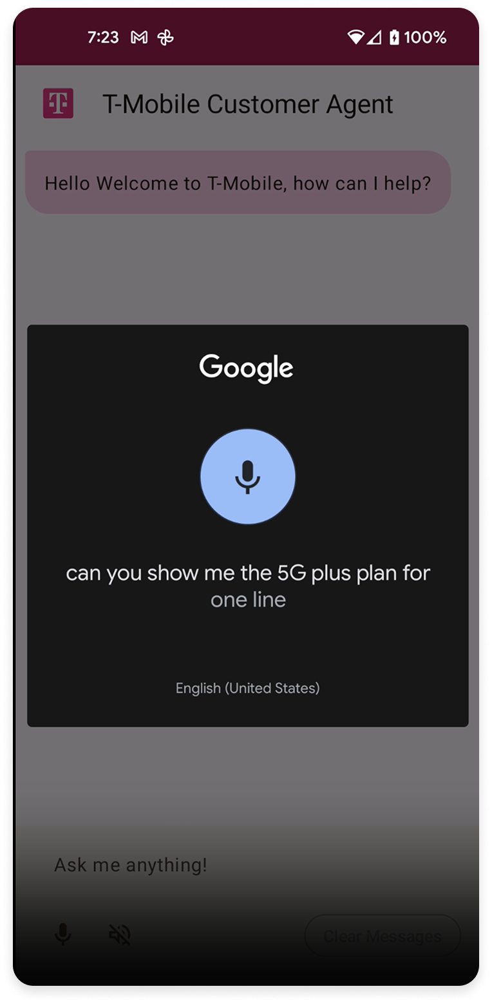
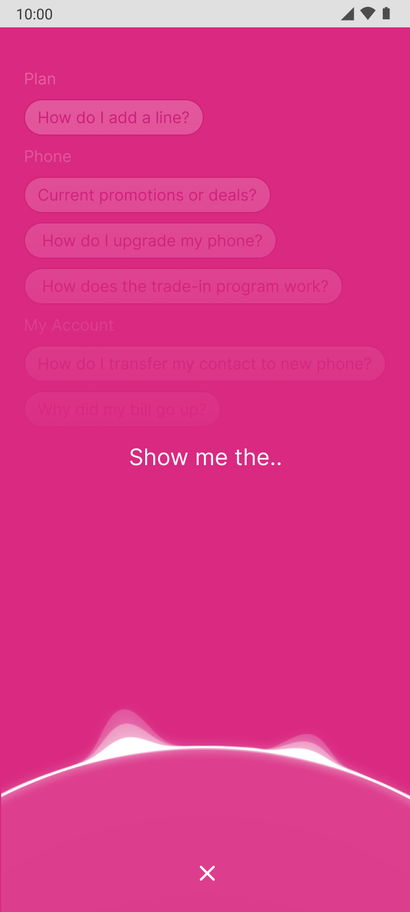
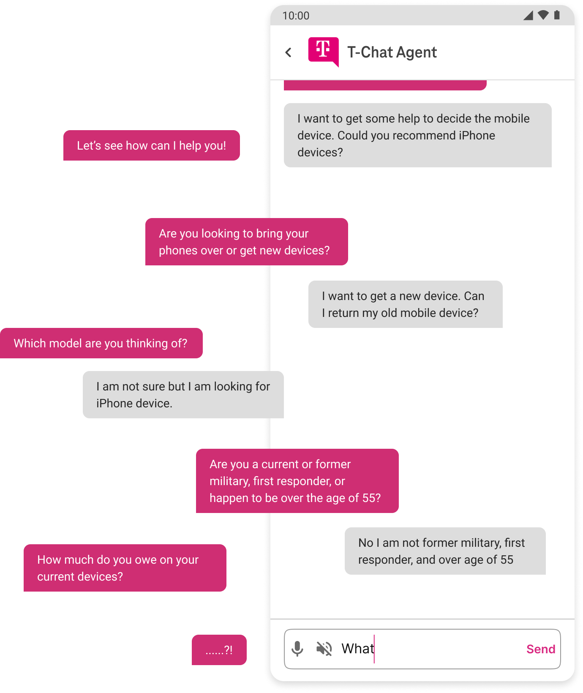
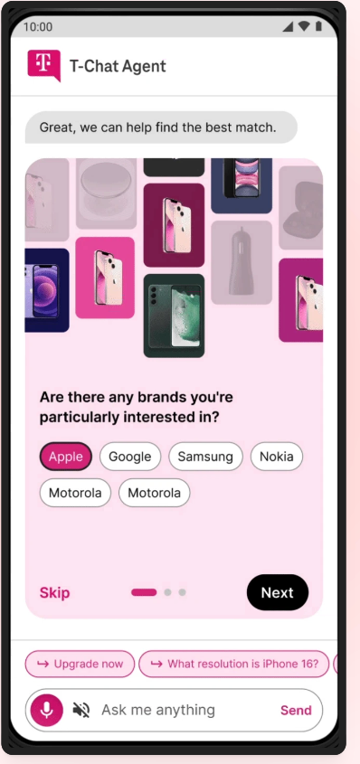

Building a Multimodal AI Agent
— Tripling Conversion.
T-Mobile's first agentic AI assistant. Led 0→1 and rolling out across web, iOS, and Android.


Led 0→1 design through engineering handoff
As the sole designer in T-Mobile's AI Innovation Lab, I led the end-to-end design of its first agentic AI assistant, from concept and interaction model to the shipped product handed off to engineering. It is rolling out across web, iOS, and Android. I owned the design system, the conversational UX, and the evaluation framework behind the AI's responses.
Switching carriers is overwhelming
65% of customers called changing to T-Mobile a hassle, and even with digital support, 80% of new customers still ended up in a store. People didn't need more information. They needed guidance.
There's too much to figure out on my own.
Research participant · switching study
I just want someone to tell me what's right for me.

What the current chatbot does
T-Mobile's live assistant, 2024Ask for "the cheapest iPhone" and it stalls with "I didn't quite get that." It can't parse a plain request.
When it can't help, it punts: browse devices yourself, or wait for a live expert. The bot defers instead of resolving.
One question returns a wall of offers and fine print, leaving people to do the sorting themselves.
An assistant that guides, not a search box that responds

Voice-led multi-modality
As the conversation moves, the interface follows. Visuals, options, and structure surface only when they help. People talk to it. They don't manage it.
Always within reach
The assistant stays present on every screen. While browsing devices, people can ask it to compare options, surface the promotions they qualify for, or start an upgrade — by voice or text — without leaving the flow they're in.


Guidance that feels human
Modeled on the in-store Mobile Expert. The assistant asks, recommends, and reassures the way a person would, so a high-stakes choice feels low-stakes.
What the MVP test changed
I shipped an MVP, watched how people actually used it, then redesigned the weak spots the data exposed.
No existing design system
There were no components for the new feature, so early screens borrowed generic UI.

Created design-system components
I built a component set that aligns with T-Mobile branding and scales across the flow.

Too many follow-up questions
The assistant needed data to personalize, so it kept asking — and people dropped off.

Replaced with a quiz format
A tappable quiz captured the same signals in seconds.
Users responded far better to it.

I owned how good the AI actually was
A great chat UI means nothing if the answer is wrong. I built the evaluation and red-teaming that made the responses trustworthy.
Generic and off-target
The model returned vague answers that missed what the customer actually needed.
Confidently wrong
Without guardrails, it surfaced plausible but inaccurate plan details, the riskiest failure for a high-stakes decision.
Accurate and honest
With 300+ red-team scenarios and quality guardrails, responses became precise, grounded, and clear about what they don't know.
One assistant, three platforms, one system
A calmer path to a confident decision
Won executive approval to ship. The work scaled org-wide and led T-Mobile to stand up a dedicated AI design team.
Soojin bridged our AI and Product organizations and set the standard for how design leads at the intersection of the two.